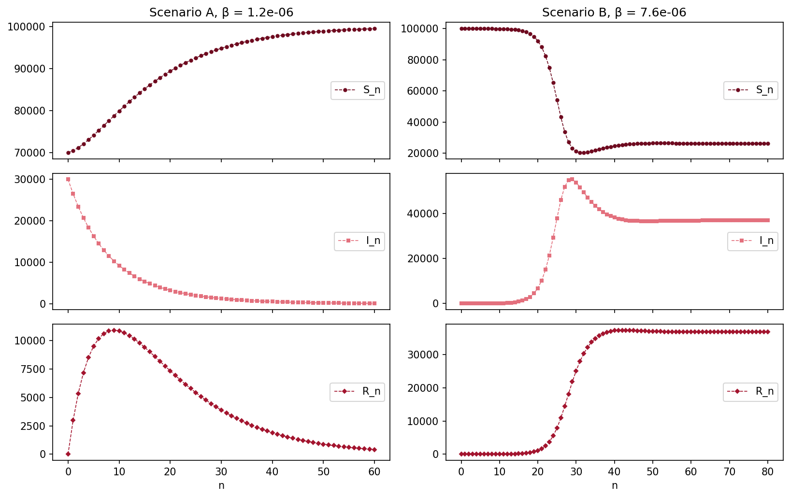
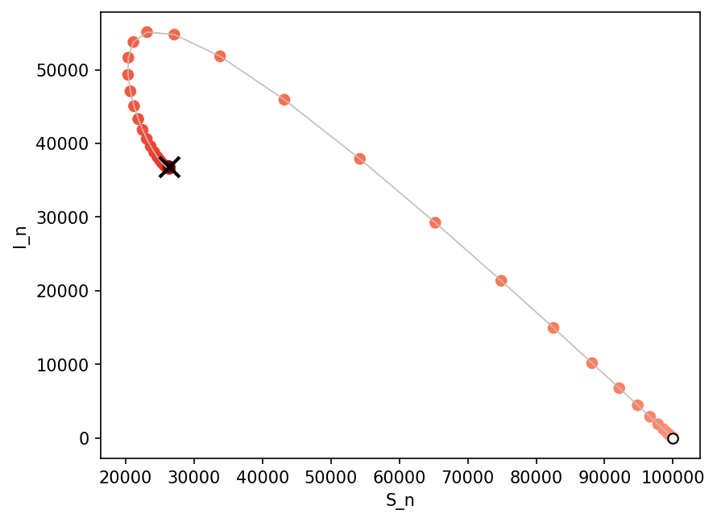
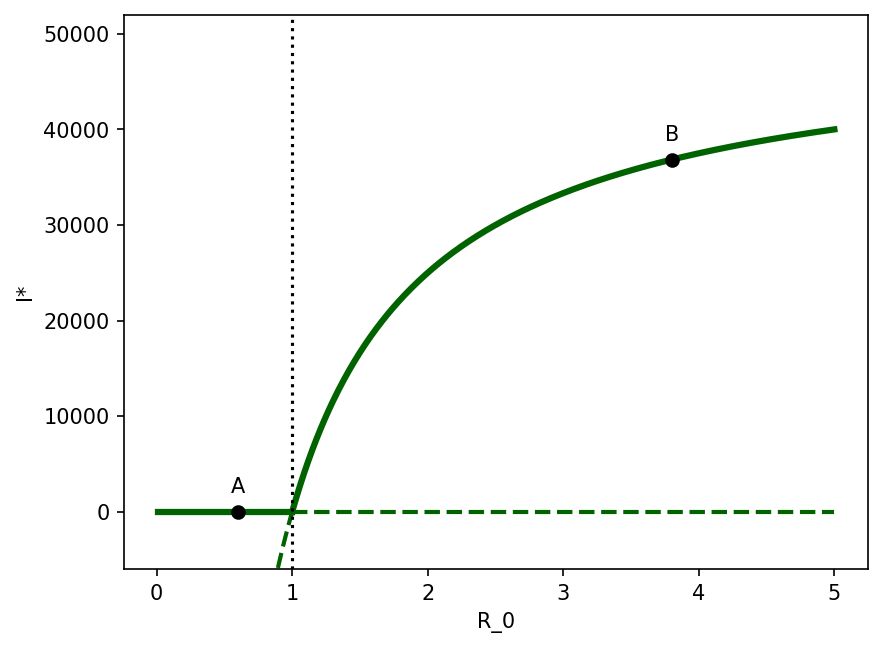
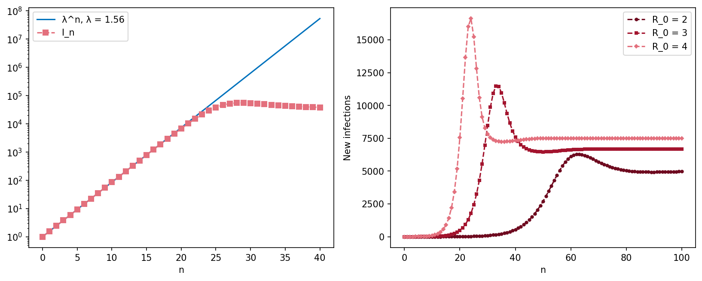

Chapter 2 · Discrete Dynamical Systems with Several Variables
2.4Nonlinear Systems: SIR Model
In the SIR model a population is divided into susceptible (S), infected (I), and recovered (R) persons. New infections arise from contacts between S and I, hence the product β Sn In: the system is nonlinear. Whether a disease persists is decided by the basic reproduction number R0.
For each figure of the section you will find the program that produces it. Change parameters and initial values and observe what happens. Figure and equation numbers refer to the book.
Fig. 2.15
SIR model, scenarios A and B
Sn+1 = Sn − β Sn In + α N − α Sn, In+1 = In + β Sn In − (γ + α) In
In scenario A (R0 = 0.6) the disease disappears despite 30,000 infected at the start. In scenario B (R0 = 3.8) a single infected person suffices for an epidemic, after which an endemic state sets in.

# Fig. 2.15: SIR model, scenarios A and B (book, Section 2.4, Eq. 2.21)
# S_{n+1} = S_n - beta S_n I_n + alpha N - alpha S_n, I_{n+1} = I_n + beta S_n I_n - (gamma + alpha) I_n, R_{n+1} = R_n + gamma I_n - alpha R_n
# N = 100000, alpha = gamma = 0.1; A: beta = 1.2e-6, S_0 = 70000, I_0 = 30000; B: beta = 7.6e-6, S_0 = 99999, I_0 = 1
# (c) 2026 Philipp Kügler · Program for the book "Dynamical Systems in the Life Sciences" · MIT License (see LICENSE)
using Printf, Plots, LinearAlgebra
N = 100000; alpha = 0.1; gamma = 0.1
farben = [RGB(0.43, 0.04, 0.12), RGB(0.89, 0.44, 0.49), RGB(0.64, 0.08, 0.18)]; zeichen = [:circle, :rect, :diamond]
lab = ["S_n", "I_n", "R_n"]
bilder = []
for (name, beta, S0, I0, M) in [("A", 1.2e-6, 70000, 30000, 60), ("B", 7.6e-6, 99999, 1, 80)]
X = zeros(3, M + 1) # rows: S, I, R
X[:, 1] = [S0, I0, N - S0 - I0]
for k in 1:M
S, I, R = X[:, k]
X[:, k + 1] = [S - beta * S * I + alpha * N - alpha * S,
I + beta * S * I - (gamma + alpha) * I,
R + gamma * I - alpha * R]
end
R0 = beta * N / (gamma + alpha) # basic reproduction number
@printf("Scenario %s: R_0 = %.1f, (S, I, R) after %d steps = (%.0f, %.0f, %.0f)\n", name, R0, M, X[:, end]...)
for z in 1:3
push!(bilder, plot(0:M, X[z, :], ls = :dash, marker = zeichen[z], ms = 2, color = farben[z], label = lab[z],
title = z == 1 ? "Scenario $name, β = $beta" : ""))
end
end
display(plot(bilder[[1, 4, 2, 5, 3, 6]]..., layout = (3, 2), size = (900, 650)))% Fig. 2.15: SIR model, scenarios A and B (book, Section 2.4, Eq. 2.21)
% S_{n+1} = S_n - beta S_n I_n + alpha N - alpha S_n, I_{n+1} = I_n + beta S_n I_n - (gamma + alpha) I_n, R_{n+1} = R_n + gamma I_n - alpha R_n
% N = 100000, alpha = gamma = 0.1; A: beta = 1.2e-6, S_0 = 70000, I_0 = 30000; B: beta = 7.6e-6, S_0 = 99999, I_0 = 1
% (c) 2026 Philipp Kügler · Program for the book "Dynamical Systems in the Life Sciences" · MIT License (see LICENSE)
N = 100000; alpha = 0.1; gamma = 0.1;
namen = 'AB';
betas = [1.2e-6 7.6e-6]; S0s = [70000 99999]; I0s = [30000 1]; schritte = [60 80];
farben = [0.43 0.04 0.12; 0.89 0.44 0.49; 0.64 0.08 0.18]; marker = 'osd'; lab = {'S_n', 'I_n', 'R_n'};
for sp = 1:2
beta = betas(sp); M = schritte(sp);
X = zeros(3, M + 1); % rows: S, I, R
X(:, 1) = [S0s(sp); I0s(sp); N - S0s(sp) - I0s(sp)];
for k = 1:M
S = X(1, k); I = X(2, k); R = X(3, k);
X(:, k + 1) = [S - beta * S * I + alpha * N - alpha * S;
I + beta * S * I - (gamma + alpha) * I;
R + gamma * I - alpha * R];
end
R0 = beta * N / (gamma + alpha); % basic reproduction number
fprintf('Scenario %s: R_0 = %.1f, (S, I, R) after %d steps = (%.0f, %.0f, %.0f)\n', namen(sp), R0, M, X(:, end));
for z = 1:3
subplot(3, 2, 2 * (z - 1) + sp);
plot(0:M, X(z, :), ['--' marker(z)], 'Color', farben(z, :), 'MarkerSize', 3); legend(lab{z}, 'Location', 'east');
if z == 1, title(sprintf('Scenario %s, beta = %g', namen(sp), beta)); end
end
xlabel('n');
end# Fig. 2.15: SIR model, scenarios A and B (book, Section 2.4, Eq. 2.21)
# S_{n+1} = S_n - beta S_n I_n + alpha N - alpha S_n, I_{n+1} = I_n + beta S_n I_n - (gamma + alpha) I_n, R_{n+1} = R_n + gamma I_n - alpha R_n
# N = 100000, alpha = gamma = 0.1; A: beta = 1.2e-6, S_0 = 70000, I_0 = 30000; B: beta = 7.6e-6, S_0 = 99999, I_0 = 1
# (c) 2026 Philipp Kügler · Program for the book "Dynamical Systems in the Life Sciences" · MIT License (see LICENSE)
import numpy as np
import matplotlib.pyplot as plt
N, alpha, gamma = 100000, 0.1, 0.1
def sir(beta, S0, I0, schritte):
S, I, R = np.zeros(schritte + 1), np.zeros(schritte + 1), np.zeros(schritte + 1)
S[0], I[0], R[0] = S0, I0, N - S0 - I0
for n in range(schritte):
S[n + 1] = S[n] - beta * S[n] * I[n] + alpha * N - alpha * S[n]
I[n + 1] = I[n] + beta * S[n] * I[n] - (gamma + alpha) * I[n]
R[n + 1] = R[n] + gamma * I[n] - alpha * R[n]
return S, I, R
fig, axs = plt.subplots(3, 2, figsize=(11, 7), sharex="col")
farben = [(0.43, 0.04, 0.12), (0.89, 0.44, 0.49), (0.64, 0.08, 0.18)]
for spalte, (name, beta, S0, I0, schritte) in enumerate([("A", 1.2e-6, 70000, 30000, 60), ("B", 7.6e-6, 99999, 1, 80)]):
S, I, R = sir(beta, S0, I0, schritte)
R0 = beta * N / (gamma + alpha) # basic reproduction number
print(f"Scenario {name}: R_0 = {R0:.1f}, (S, I, R) after {schritte} steps = ({S[-1]:.0f}, {I[-1]:.0f}, {R[-1]:.0f})")
for zeile, (X, lab, m) in enumerate(zip([S, I, R], ["S_n", "I_n", "R_n"], "osD")):
axs[zeile, spalte].plot(X, "--", marker=m, ms=3, lw=0.8, color=farben[zeile], label=lab)
axs[zeile, spalte].legend(loc="center right")
axs[0, spalte].set_title(f"Scenario {name}, β = {beta:g}")
axs[2, spalte].set_xlabel("n")
plt.tight_layout()
plt.show()# Fig. 2.15: SIR model, scenarios A and B (book, Section 2.4, Eq. 2.21)
# S_{n+1} = S_n - beta S_n I_n + alpha N - alpha S_n, I_{n+1} = I_n + beta S_n I_n - (gamma + alpha) I_n, R_{n+1} = R_n + gamma I_n - alpha R_n
# N = 100000, alpha = gamma = 0.1; A: beta = 1.2e-6, S_0 = 70000, I_0 = 30000; B: beta = 7.6e-6, S_0 = 99999, I_0 = 1
# (c) 2026 Philipp Kügler · Program for the book "Dynamical Systems in the Life Sciences" · MIT License (see LICENSE)
N <- 100000; alpha <- 0.1; gamma <- 0.1
farben <- c(rgb(0.43, 0.04, 0.12), rgb(0.89, 0.44, 0.49), rgb(0.64, 0.08, 0.18)); zeichen <- c(16, 15, 18)
lab <- c("S_n", "I_n", "R_n")
par(mfcol = c(3, 2), mar = c(4, 4, 2, 1))
for (sz in list(list("A", 1.2e-6, 70000, 30000, 60), list("B", 7.6e-6, 99999, 1, 80))) {
name <- sz[[1]]; beta <- sz[[2]]; M <- sz[[5]]
X <- matrix(0, 3, M + 1) # rows: S, I, R
X[, 1] <- c(sz[[3]], sz[[4]], N - sz[[3]] - sz[[4]])
for (k in 1:M) {
S <- X[1, k]; I <- X[2, k]; R <- X[3, k]
X[, k + 1] <- c(S - beta * S * I + alpha * N - alpha * S,
I + beta * S * I - (gamma + alpha) * I,
R + gamma * I - alpha * R)
}
R0 <- beta * N / (gamma + alpha) # basic reproduction number
cat(sprintf("Scenario %s: R_0 = %.1f, (S, I, R) after %d steps = (%.0f, %.0f, %.0f)\n", name, R0, M, X[1, M + 1], X[2, M + 1], X[3, M + 1]))
for (z in 1:3) {
plot(0:M, X[z, ], type = "o", lty = 2, pch = zeichen[z], cex = 0.5, col = farben[z], xlab = if (z == 3) "n" else "", ylab = lab[z],
main = if (z == 1) sprintf("Scenario %s, beta = %g", name, beta) else "")
}
}Output in the command window
Scenario A: R_0 = 0.6, (S, I, R) after 60 steps = (99500, 97, 403)
Scenario B: R_0 = 3.8, (S, I, R) after 80 steps = (26315, 36842, 36842)Fig. 2.16
Scenario B in the phase plane
S* = N/R0, I* = α (N − S*)/(γ + α)
The states (Sn, In) move away from the disease-free state (N, 0) and spiral toward the endemic state (cross).

# Fig. 2.16: Scenario B of the SIR model in the phase plane (book, Section 2.4, Eq. 2.21)
# states (S_n, I_n), light: early, dark: late; cross: steady state x_b* = (N/R_0, alpha (N - S*)/(gamma + alpha))
# (c) 2026 Philipp Kügler · Program for the book "Dynamical Systems in the Life Sciences" · MIT License (see LICENSE)
using Printf, Plots, LinearAlgebra
N = 100000; alpha = 0.1; gamma = 0.1
beta = 7.6e-6
M = 80
S = zeros(M + 1); I = zeros(M + 1)
S[1] = 99999; I[1] = 1
for k in 1:M
S[k + 1] = S[k] - beta * S[k] * I[k] + alpha * (N - S[k])
I[k + 1] = I[k] + beta * S[k] * I[k] - (gamma + alpha) * I[k]
end
R0 = beta * N / (gamma + alpha)
Ss = N / R0; Is = alpha * (N - Ss) / (gamma + alpha)
@printf("R_0 = %.1f, steady state x_b*: S* = %.0f, I* = %.0f\n", R0, Ss, Is)
@printf("(S_80, I_80) = (%.0f, %.0f)\n", S[end], I[end])
p = plot(S, I, color = :gray, legend = false, xlabel = "S_n", ylabel = "I_n")
scatter!(p, S, I, zcolor = 0:M, color = cgrad([RGB(1, 0.85, 0.85), RGB(0.43, 0.04, 0.12)]), colorbar = false) # light: early, dark: late
scatter!(p, [Ss], [Is], marker = :x, ms = 8, color = :black)
scatter!(p, [N], [0], color = :white, msc = :black) # x_a* = (N, 0): disease-free
display(p)% Fig. 2.16: Scenario B of the SIR model in the phase plane (book, Section 2.4, Eq. 2.21)
% states (S_n, I_n), light: early, dark: late; cross: steady state x_b* = (N/R_0, alpha (N - S*)/(gamma + alpha))
% (c) 2026 Philipp Kügler · Program for the book "Dynamical Systems in the Life Sciences" · MIT License (see LICENSE)
N = 100000; alpha = 0.1; gamma = 0.1; beta = 7.6e-6;
M = 80;
S = zeros(1, M + 1); I = zeros(1, M + 1);
S(1) = 99999; I(1) = 1;
for k = 1:M
S(k + 1) = S(k) - beta * S(k) * I(k) + alpha * (N - S(k));
I(k + 1) = I(k) + beta * S(k) * I(k) - (gamma + alpha) * I(k);
end
R0 = beta * N / (gamma + alpha);
Ss = N / R0; Is = alpha * (N - Ss) / (gamma + alpha);
fprintf('R_0 = %.1f, steady state x_b*: S* = %.0f, I* = %.0f\n', R0, Ss, Is);
fprintf('(S_80, I_80) = (%.0f, %.0f)\n', S(end), I(end));
plot(S, I, 'Color', [0.75 0.75 0.75]); hold on
rot = [linspace(1, 0.43, 64)' linspace(0.85, 0.04, 64)' linspace(0.85, 0.12, 64)'];
colormap(rot); scatter(S, I, 30, 0:M, 'filled'); % light: early, dark: late
plot(Ss, Is, 'kx', 'MarkerSize', 12, 'LineWidth', 2);
plot(N, 0, 'ko', 'MarkerFaceColor', 'w'); hold off % x_a* = (N, 0): disease-free
xlabel('S_n'); ylabel('I_n');# Fig. 2.16: Scenario B of the SIR model in the phase plane (book, Section 2.4, Eq. 2.21)
# states (S_n, I_n), light: early, dark: late; cross: steady state x_b* = (N/R_0, alpha (N - S*)/(gamma + alpha))
# (c) 2026 Philipp Kügler · Program for the book "Dynamical Systems in the Life Sciences" · MIT License (see LICENSE)
import numpy as np
import matplotlib.pyplot as plt
N, alpha, gamma, beta = 100000, 0.1, 0.1, 7.6e-6
schritte = 80
S, I = np.zeros(schritte + 1), np.zeros(schritte + 1)
S[0], I[0] = 99999, 1
for n in range(schritte):
S[n + 1] = S[n] - beta * S[n] * I[n] + alpha * (N - S[n])
I[n + 1] = I[n] + beta * S[n] * I[n] - (gamma + alpha) * I[n]
R0 = beta * N / (gamma + alpha)
Ss = N / R0; Is = alpha * (N - Ss) / (gamma + alpha)
print(f"R_0 = {R0:.1f}, steady state x_b*: S* = {Ss:.0f}, I* = {Is:.0f}")
print(f"(S_80, I_80) = ({S[-1]:.0f}, {I[-1]:.0f})")
plt.plot(S, I, color="0.75", lw=0.8)
plt.scatter(S, I, c=np.arange(schritte + 1), cmap="Reds", vmin=-25)
plt.plot(Ss, Is, "kx", ms=12, mew=2)
plt.plot(N, 0, "ko", mfc="w") # x_a* = (N, 0): disease-free
plt.xlabel("S_n"); plt.ylabel("I_n")
plt.show()# Fig. 2.16: Scenario B of the SIR model in the phase plane (book, Section 2.4, Eq. 2.21)
# states (S_n, I_n), light: early, dark: late; cross: steady state x_b* = (N/R_0, alpha (N - S*)/(gamma + alpha))
# (c) 2026 Philipp Kügler · Program for the book "Dynamical Systems in the Life Sciences" · MIT License (see LICENSE)
N <- 100000; alpha <- 0.1; gamma <- 0.1
beta <- 7.6e-6
M <- 80
S <- numeric(M + 1); I <- numeric(M + 1)
S[1] <- 99999; I[1] <- 1
for (k in 1:M) {
S[k + 1] <- S[k] - beta * S[k] * I[k] + alpha * (N - S[k])
I[k + 1] <- I[k] + beta * S[k] * I[k] - (gamma + alpha) * I[k]
}
R0 <- beta * N / (gamma + alpha)
Ss <- N / R0; Is <- alpha * (N - Ss) / (gamma + alpha)
cat(sprintf("R_0 = %.1f, steady state x_b*: S* = %.0f, I* = %.0f\n", R0, Ss, Is))
cat(sprintf("(S_80, I_80) = (%.0f, %.0f)\n", S[M + 1], I[M + 1]))
hell_dunkel <- colorRampPalette(c(rgb(1, 0.85, 0.85), rgb(0.43, 0.04, 0.12)))(M + 1) # light: early, dark: late
plot(S, I, type = "l", col = "grey75", xlab = "S_n", ylab = "I_n")
points(S, I, pch = 16, col = hell_dunkel)
points(Ss, Is, pch = 4, cex = 2, lwd = 2)
points(N, 0, pch = 21, bg = "white") # x_a* = (N, 0): disease-freeOutput in the command window
R_0 = 3.8, steady state x_b*: S* = 26316, I* = 36842
(S_80, I_80) = (26315, 36842)Fig. 2.17
Steady-state values I* as a function of R0
R0 = β N/(γ + α)
At R0 = 1 the two steady states cross and exchange their stability. Solid: stable, dashed: unstable.

# Fig. 2.17: Steady-state values I* of the SIR model as a function of R_0 (book, Section 2.4, Eq. 2.30)
# x_a*: I* = 0, stable for R_0 < 1; x_b*: I* = alpha N (1 - 1/R_0)/(gamma + alpha), stable for R_0 > 1 (alpha = gamma = 0.1)
# (c) 2026 Philipp Kügler · Program for the book "Dynamical Systems in the Life Sciences" · MIT License (see LICENSE)
using Printf, Plots, LinearAlgebra
N = 100000; alpha = 0.1; gamma = 0.1
R0 = range(0.01, 5, length = 500)
Ib = alpha * N .* (1 .- 1 ./ R0) ./ (gamma + alpha)
gruen = RGB(0, 0.39, 0)
li = R0 .<= 1; re = R0 .>= 1; nah = (R0 .> 0.85) .& (R0 .<= 1)
p = plot(R0[li], 0 .* R0[li], color = gruen, lw = 3, legend = false, ylims = (-6000, 52000), xlabel = "R_0", ylabel = "I*") # stable
plot!(p, R0[re], 0 .* R0[re], ls = :dash, color = gruen, lw = 2) # unstable
plot!(p, R0[re], Ib[re], color = gruen, lw = 3)
plot!(p, R0[nah], Ib[nah], ls = :dash, color = gruen, lw = 2)
for (r, name) in [(0.6, "A"), (3.8, "B")]
i = r < 1 ? 0.0 : alpha * N * (1 - 1 / r) / (gamma + alpha)
scatter!(p, [r], [i], color = :black); annotate!(p, r, i + 2500, text(name, 10))
@printf("Scenario %s: R_0 = %g, I* = %.0f\n", name, r, i)
end
vline!(p, [1], ls = :dot, color = :black)
display(p)% Fig. 2.17: Steady-state values I* of the SIR model as a function of R_0 (book, Section 2.4, Eq. 2.30)
% x_a*: I* = 0, stable for R_0 < 1; x_b*: I* = alpha N (1 - 1/R_0)/(gamma + alpha), stable for R_0 > 1 (alpha = gamma = 0.1)
% (c) 2026 Philipp Kügler · Program for the book "Dynamical Systems in the Life Sciences" · MIT License (see LICENSE)
N = 100000; alpha = 0.1; gamma = 0.1;
R0 = linspace(0.01, 5, 500);
Ib = alpha * N * (1 - 1 ./ R0) / (gamma + alpha);
gruen = [0 0.39 0];
li = R0 <= 1; re = R0 >= 1; nah = R0 > 0.85 & R0 <= 1;
plot(R0(li), 0 * R0(li), 'Color', gruen, 'LineWidth', 3); hold on % stable
plot(R0(re), 0 * R0(re), '--', 'Color', gruen, 'LineWidth', 2) % unstable
plot(R0(re), Ib(re), 'Color', gruen, 'LineWidth', 3)
plot(R0(nah), Ib(nah), '--', 'Color', gruen, 'LineWidth', 2)
r = [0.6 3.8]; namen = 'AB';
for j = 1:2
if r(j) < 1, i = 0; else, i = alpha * N * (1 - 1 / r(j)) / (gamma + alpha); end
plot(r(j), i, 'ko', 'MarkerFaceColor', 'k'); text(r(j), i + 2000, namen(j));
fprintf('Scenario %s: R_0 = %g, I* = %.0f\n', namen(j), r(j), i);
end
plot([1 1], [-6000 52000], 'k:'); hold off
ylim([-6000 52000]); xlabel('R_0'); ylabel('I*');# Fig. 2.17: Steady-state values I* of the SIR model as a function of R_0 (book, Section 2.4, Eq. 2.30)
# x_a*: I* = 0, stable for R_0 < 1; x_b*: I* = alpha N (1 - 1/R_0)/(gamma + alpha), stable for R_0 > 1 (alpha = gamma = 0.1)
# (c) 2026 Philipp Kügler · Program for the book "Dynamical Systems in the Life Sciences" · MIT License (see LICENSE)
import numpy as np
import matplotlib.pyplot as plt
N, alpha, gamma = 100000, 0.1, 0.1
R0 = np.linspace(0.01, 5, 500)
Ib = alpha * N * (1 - 1 / R0) / (gamma + alpha)
gruen = (0, 0.39, 0)
plt.plot(R0[R0 <= 1], 0 * R0[R0 <= 1], color=gruen, lw=3) # stable
plt.plot(R0[R0 >= 1], 0 * R0[R0 >= 1], "--", color=gruen, lw=2) # unstable
plt.plot(R0[R0 >= 1], Ib[R0 >= 1], color=gruen, lw=3)
plt.plot(R0[(R0 > 0.85) & (R0 <= 1)], Ib[(R0 > 0.85) & (R0 <= 1)], "--", color=gruen, lw=2)
for r, name in [(0.6, "A"), (3.8, "B")]:
i = 0 if r < 1 else alpha * N * (1 - 1 / r) / (gamma + alpha)
plt.plot(r, i, "ko"); plt.text(r, i + 2000, name, ha="center")
print(f"Scenario {name}: R_0 = {r}, I* = {i:.0f}")
plt.axvline(1, color="k", ls=":")
plt.ylim(-6000, 52000); plt.xlabel("R_0"); plt.ylabel("I*")
plt.show()# Fig. 2.17: Steady-state values I* of the SIR model as a function of R_0 (book, Section 2.4, Eq. 2.30)
# x_a*: I* = 0, stable for R_0 < 1; x_b*: I* = alpha N (1 - 1/R_0)/(gamma + alpha), stable for R_0 > 1 (alpha = gamma = 0.1)
# (c) 2026 Philipp Kügler · Program for the book "Dynamical Systems in the Life Sciences" · MIT License (see LICENSE)
N <- 100000; alpha <- 0.1; gamma <- 0.1
R0 <- seq(0.01, 5, length.out = 500)
Ib <- alpha * N * (1 - 1 / R0) / (gamma + alpha)
gruen <- rgb(0, 0.39, 0)
li <- R0 <= 1; re <- R0 >= 1; nah <- R0 > 0.85 & R0 <= 1
plot(R0[li], 0 * R0[li], type = "l", col = gruen, lwd = 3, xlim = c(0, 5), ylim = c(-6000, 52000), xlab = "R_0", ylab = "I*") # stable
lines(R0[re], 0 * R0[re], lty = 2, col = gruen, lwd = 2) # unstable
lines(R0[re], Ib[re], col = gruen, lwd = 3)
lines(R0[nah], Ib[nah], lty = 2, col = gruen, lwd = 2)
for (sz in list(list(0.6, "A"), list(3.8, "B"))) {
r <- sz[[1]]; i <- if (r < 1) 0 else alpha * N * (1 - 1 / r) / (gamma + alpha)
points(r, i, pch = 16); text(r, i + 2500, sz[[2]])
cat(sprintf("Scenario %s: R_0 = %g, I* = %.0f\n", sz[[2]], r, i))
}
abline(v = 1, lty = 3)Output in the command window
Scenario A: R_0 = 0.6, I* = 0
Scenario B: R_0 = 3.8, I* = 36842Fig. 2.18
Initial phase and new infections
In ≈ λn I0, λ = 1 + (γ + α)(R0 − 1)
As long as almost everybody is susceptible, the number of infected grows geometrically (left, logarithmic axis). Right: the larger R0, the earlier and higher the peak of new infections.

# Fig. 2.18: Initial phase of the epidemic and new infections (book, Section 2.4, Eq. 2.21 and 2.20)
# left: I_n in scenario B on a logarithmic scale with the growth factor lambda = 1 + (gamma + alpha)(R_0 - 1);
# right: new infections beta S_n I_n per time step for R_0 = 2, 3, 4 (I_0 = 1, alpha = gamma = 0.1)
# (c) 2026 Philipp Kügler · Program for the book "Dynamical Systems in the Life Sciences" · MIT License (see LICENSE)
using Printf, Plots, LinearAlgebra
N = 100000; alpha = 0.1; gamma = 0.1
function sir(beta, M) # S_n and I_n for I_0 = 1
S = zeros(M + 1); I = zeros(M + 1); S[1] = N - 1; I[1] = 1
for k in 1:M
S[k + 1] = S[k] - beta * S[k] * I[k] + alpha * (N - S[k])
I[k + 1] = I[k] + beta * S[k] * I[k] - (gamma + alpha) * I[k]
end
return S, I
end
beta = 7.6e-6
S, I = sir(beta, 40)
lam = 1 + (gamma + alpha) * (beta * N / (gamma + alpha) - 1)
@printf("initial growth factor: lambda = %.2f; I_10 = %.1f, lambda^10 = %.1f\n", lam, I[11], lam^10)
n = 0:40
p1 = plot(n, lam .^ n, yscale = :log10, color = RGB(0, 0.447, 0.741), lw = 2, label = @sprintf("λ^n, λ = %.2f", lam), xlabel = "n")
plot!(p1, n, I, ls = :dash, marker = :rect, color = RGB(0.89, 0.44, 0.49), label = "I_n")
rot = [RGB(0.43, 0.04, 0.12), RGB(0.64, 0.08, 0.18), RGB(0.89, 0.44, 0.49)]; zeichen = [:circle, :rect, :diamond]
p2 = plot(xlabel = "n", ylabel = "New infections")
for (i, R0) in enumerate(2:4)
beta = R0 * (gamma + alpha) / N
S, I = sir(beta, 100)
neu = beta .* S .* I
plot!(p2, 0:100, neu, ls = :dash, marker = zeichen[i], ms = 2, color = rot[i], label = "R_0 = $R0")
@printf("R_0 = %d: at most %.0f new infections in step n = %d\n", R0, maximum(neu), argmax(neu) - 1)
end
display(plot(p1, p2, layout = (1, 2), size = (900, 420)))% Fig. 2.18: Initial phase of the epidemic and new infections (book, Section 2.4, Eq. 2.21 and 2.20)
% left: I_n in scenario B on a logarithmic scale with the growth factor lambda = 1 + (gamma + alpha)(R_0 - 1);
% right: new infections beta S_n I_n per time step for R_0 = 2, 3, 4 (I_0 = 1, alpha = gamma = 0.1)
% (c) 2026 Philipp Kügler · Program for the book "Dynamical Systems in the Life Sciences" · MIT License (see LICENSE)
N = 100000; alpha = 0.1; gamma = 0.1;
% left: scenario B
beta = 7.6e-6; M = 40;
S = zeros(1, M + 1); I = zeros(1, M + 1); S(1) = N - 1; I(1) = 1;
for k = 1:M
S(k + 1) = S(k) - beta * S(k) * I(k) + alpha * (N - S(k));
I(k + 1) = I(k) + beta * S(k) * I(k) - (gamma + alpha) * I(k);
end
lam = 1 + (gamma + alpha) * (beta * N / (gamma + alpha) - 1);
fprintf('initial growth factor: lambda = %.2f; I_10 = %.1f, lambda^10 = %.1f\n', lam, I(11), lam^10);
n = 0:M;
subplot(1, 2, 1);
semilogy(n, lam.^n, 'Color', [0 0.447 0.741]); hold on
semilogy(n, I, 's--', 'Color', [0.89 0.44 0.49]); hold off
xlabel('n'); legend(sprintf('lambda^n, lambda = %.2f', lam), 'I_n');
% right: new infections for R_0 = 2, 3, 4
subplot(1, 2, 2); hold on
rot = [0.43 0.04 0.12; 0.64 0.08 0.18; 0.89 0.44 0.49]; marker = 'osd';
M = 100;
for j = 1:3
R0 = j + 1;
beta = R0 * (gamma + alpha) / N;
S = zeros(1, M + 1); I = zeros(1, M + 1); S(1) = N - 1; I(1) = 1;
for k = 1:M
S(k + 1) = S(k) - beta * S(k) * I(k) + alpha * (N - S(k));
I(k + 1) = I(k) + beta * S(k) * I(k) - (gamma + alpha) * I(k);
end
neu = beta * S .* I;
plot(0:M, neu, ['--' marker(j)], 'Color', rot(j, :), 'MarkerSize', 3, 'DisplayName', sprintf('R_0 = %d', R0));
[m, im] = max(neu);
fprintf('R_0 = %d: at most %.0f new infections in step n = %d\n', R0, m, im - 1);
end
hold off; xlabel('n'); ylabel('New infections'); legend('show');# Fig. 2.18: Initial phase of the epidemic and new infections (book, Section 2.4, Eq. 2.21 and 2.20)
# left: I_n in scenario B on a logarithmic scale with the growth factor lambda = 1 + (gamma + alpha)(R_0 - 1);
# right: new infections beta S_n I_n per time step for R_0 = 2, 3, 4 (I_0 = 1, alpha = gamma = 0.1)
# (c) 2026 Philipp Kügler · Program for the book "Dynamical Systems in the Life Sciences" · MIT License (see LICENSE)
import numpy as np
import matplotlib.pyplot as plt
N, alpha, gamma = 100000, 0.1, 0.1
def sir(beta, schritte):
S, I = np.zeros(schritte + 1), np.zeros(schritte + 1)
S[0], I[0] = N - 1, 1
for n in range(schritte):
S[n + 1] = S[n] - beta * S[n] * I[n] + alpha * (N - S[n])
I[n + 1] = I[n] + beta * S[n] * I[n] - (gamma + alpha) * I[n]
return S, I
fig, axs = plt.subplots(1, 2, figsize=(11, 4.5))
beta = 7.6e-6
S, I = sir(beta, 40)
lam = 1 + (gamma + alpha) * (beta * N / (gamma + alpha) - 1)
print(f"initial growth factor: lambda = {lam:.2f}; I_10 = {I[10]:.1f}, lambda^10 = {lam**10:.1f}")
n = np.arange(41)
axs[0].semilogy(n, lam**n, color=(0, 0.447, 0.741), label=f"λ^n, λ = {lam:.2f}")
axs[0].semilogy(n, I, "s--", color=(0.89, 0.44, 0.49), label="I_n")
axs[0].set_xlabel("n"); axs[0].legend()
rot = [(0.43, 0.04, 0.12), (0.64, 0.08, 0.18), (0.89, 0.44, 0.49)]
for R0, c, m in zip([2, 3, 4], rot, "osD"):
beta = R0 * (gamma + alpha) / N
S, I = sir(beta, 100)
neu = beta * S * I
axs[1].plot(neu, "--", marker=m, ms=3, color=c, label=f"R_0 = {R0}")
print(f"R_0 = {R0}: at most {neu.max():.0f} new infections in step n = {neu.argmax()}")
axs[1].set_xlabel("n"); axs[1].set_ylabel("New infections"); axs[1].legend()
plt.tight_layout()
plt.show()# Fig. 2.18: Initial phase of the epidemic and new infections (book, Section 2.4, Eq. 2.21 and 2.20)
# left: I_n in scenario B on a logarithmic scale with the growth factor lambda = 1 + (gamma + alpha)(R_0 - 1);
# right: new infections beta S_n I_n per time step for R_0 = 2, 3, 4 (I_0 = 1, alpha = gamma = 0.1)
# (c) 2026 Philipp Kügler · Program for the book "Dynamical Systems in the Life Sciences" · MIT License (see LICENSE)
N <- 100000; alpha <- 0.1; gamma <- 0.1
sir <- function(beta, M) { # S_n and I_n for I_0 = 1
S <- numeric(M + 1); I <- numeric(M + 1); S[1] <- N - 1; I[1] <- 1
for (k in 1:M) {
S[k + 1] <- S[k] - beta * S[k] * I[k] + alpha * (N - S[k])
I[k + 1] <- I[k] + beta * S[k] * I[k] - (gamma + alpha) * I[k]
}
list(S = S, I = I)
}
par(mfrow = c(1, 2))
beta <- 7.6e-6
x <- sir(beta, 40)
lam <- 1 + (gamma + alpha) * (beta * N / (gamma + alpha) - 1)
cat(sprintf("initial growth factor: lambda = %.2f; I_10 = %.1f, lambda^10 = %.1f\n", lam, x$I[11], lam^10))
n <- 0:40
plot(n, lam^n, type = "l", log = "y", col = rgb(0, 0.447, 0.741), lwd = 2, ylim = c(0.5, 1e6), xlab = "n", ylab = "")
lines(n, x$I, type = "o", lty = 2, pch = 15, col = rgb(0.89, 0.44, 0.49))
legend("topleft", legend = c(sprintf("lambda^n, lambda = %.2f", lam), "I_n"), col = c(rgb(0, 0.447, 0.741), rgb(0.89, 0.44, 0.49)), lty = c(1, 2), pch = c(NA, 15))
rot <- c(rgb(0.43, 0.04, 0.12), rgb(0.64, 0.08, 0.18), rgb(0.89, 0.44, 0.49)); zeichen <- c(16, 15, 18)
plot(NULL, xlim = c(0, 100), ylim = c(0, 17000), xlab = "n", ylab = "New infections")
for (i in 1:3) {
R0 <- i + 1
beta <- R0 * (gamma + alpha) / N
x <- sir(beta, 100)
neu <- beta * x$S * x$I
lines(0:100, neu, type = "o", lty = 2, pch = zeichen[i], cex = 0.5, col = rot[i])
cat(sprintf("R_0 = %d: at most %.0f new infections in step n = %d\n", R0, max(neu), which.max(neu) - 1))
}
legend("topright", legend = sprintf("R_0 = %d", 2:4), col = rot, pch = zeichen, lty = 2)Output in the command window
initial growth factor: lambda = 1.56; I_10 = 85.3, lambda^10 = 85.4
R_0 = 2: at most 6298 new infections in step n = 63
R_0 = 3: at most 11474 new infections in step n = 33
R_0 = 4: at most 16616 new infections in step n = 24Try it in the browser · no installation
SIR model
Change the basic reproduction number R0. Below 1 the disease disappears, above 1 an endemic state sets in (N = 100,000, α = 0.1).
MATLAB apps from the course
Download, put into a folder, and type the name without extension in MATLAB, e.g. sir_app. The apps use the graphical user interface of MATLAB and do not run in GNU Octave. Their user interface is in German.
- sir_app.mDiscrete SIR model